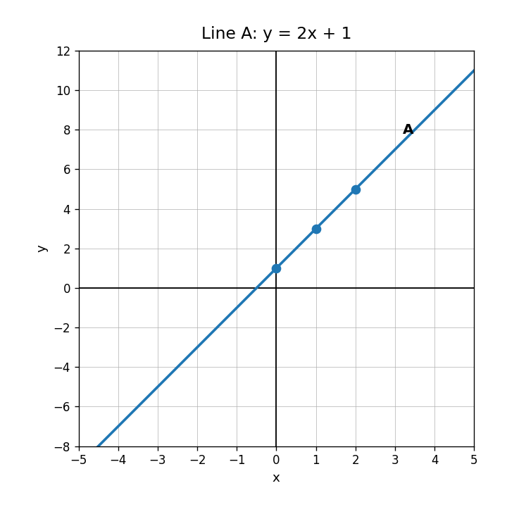
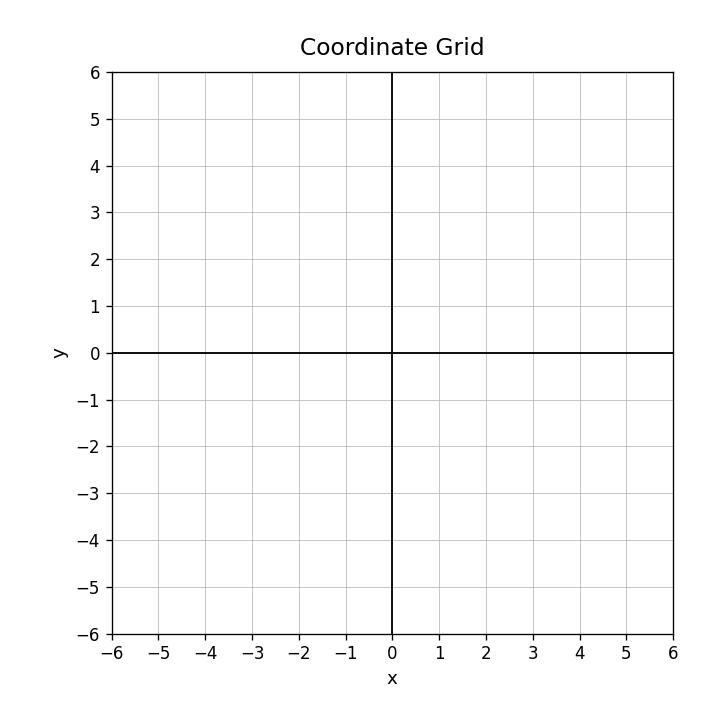
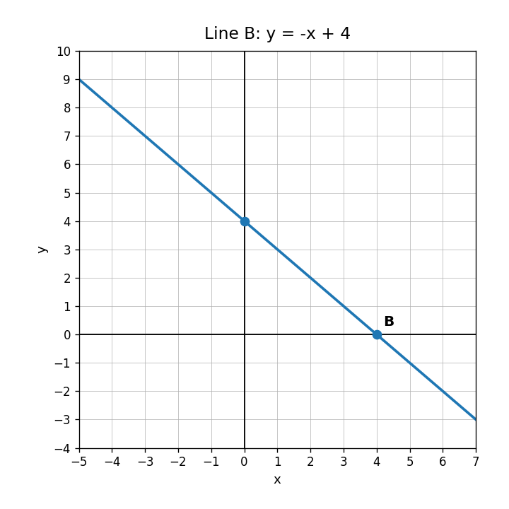
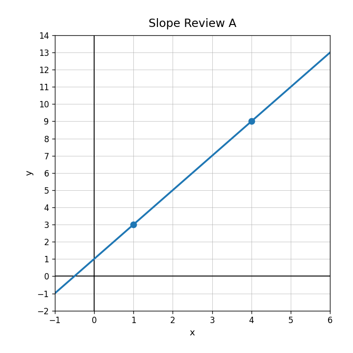
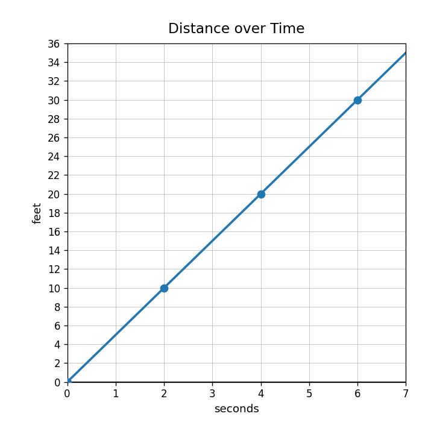
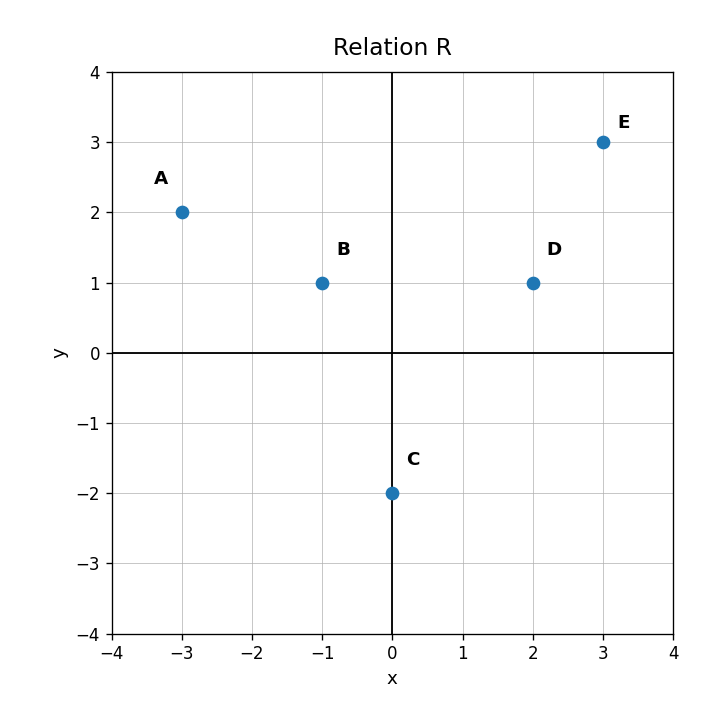

Use the graph. Identify the $y$-intercept and state whether the line is increasing or decreasing.

For the equation $y=3x-2$, identify the slope and the $y$-intercept.
Graph the relationship using the table. Then describe the pattern in the points.
| $x$ | 0 | 1 | 2 | 3 |
|---|---|---|---|---|
| $y$ | -1 | 1 | 3 | 5 |

Does the graph match $y=-x+4$? Use the intercept and slope as evidence.

Find the slope of the line using the two marked points.

State whether each slope is positive, negative, zero, or undefined: $4$, $-\frac{3}{2}$, $0$, vertical line.
Complete the sentence: A constant rate of change means the output changes by the same amount for each equal change in the __________.
Use the graph. How many feet are traveled each second?

Find the rate of change shown in the table.
| time | 1 | 3 | 5 | 7 |
|---|---|---|---|---|
| distance | 8 | 18 | 28 | 38 |
Find the slope between $(2,9)$ and $(6,21)$.
A student says the slope between $(1,10)$ and $(5,2)$ is positive because both coordinates are positive. Explain the misconception and find the actual slope.
Create two different pairs of points that have slope $3$. Explain how you know both pairs work.
For $f(x)=2x+7$, find $f(4)$.
In the ordered pair $(5,17)$, identify the input and the output.
Complete the table for the rule $g(x)=3x+1$.
| $x$ | 0 | 2 | 4 |
|---|---|---|---|
| $g(x)$ |
Does Relation R represent a function? Explain using inputs and outputs.
